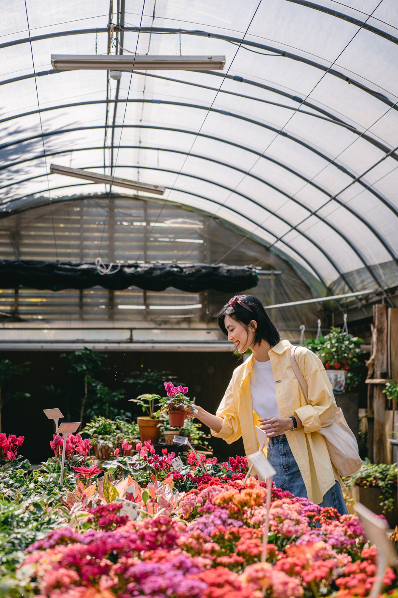
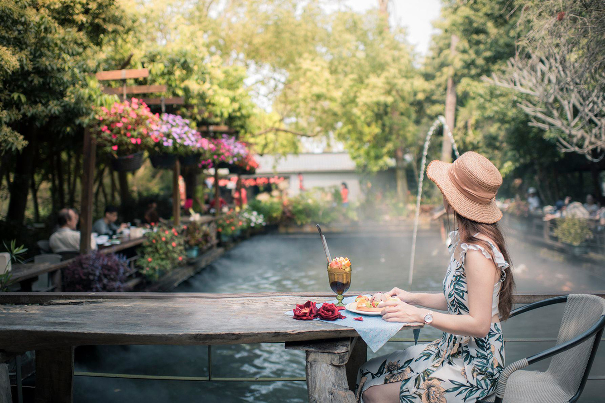
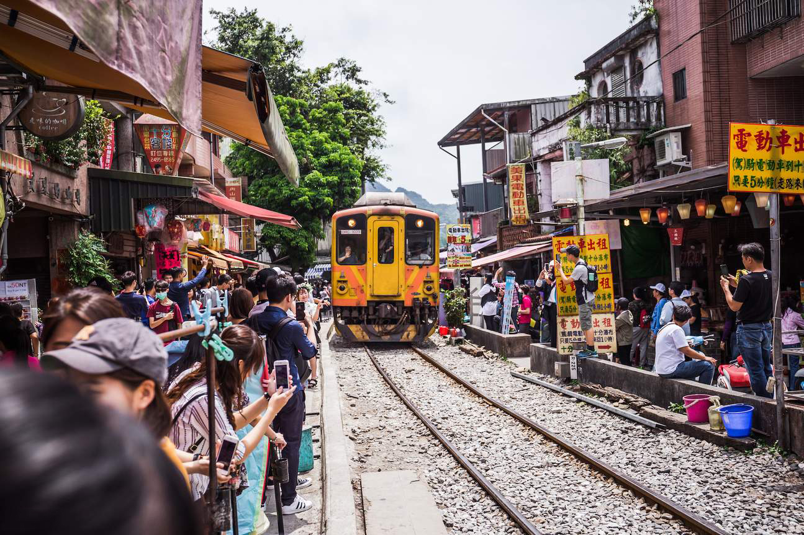

Đài Loan là điểm đến du lịch lý tưởng với sự kết hợp hài hòa giữa hiện đại và truyền thống.
Nơi đây không chỉ nổi tiếng với cảnh đẹp thiên nhiên hùng vĩ,
ẩm thực phong phú mà còn thu hút du khách bởi những trải nghiệm độc đáo.
Trong đó, trồng hoa ở Zhou Zhe Cottage và xem quy trình sản xuất tinh dầu từ hoa
tại Hualu Flower Leisure Farm, hay khám phá văn hóa ở phố cổ Thập Phần là những trải
nghiệm thú vị bạn sẽ thích.
Đài Loan đã từng khiến bao người thích thú với những công trình kiến trúc đương đại
và nhịp sống rộn ràng như trẩy hội, thì trong thời gian tới có lẽ hòn đảo này sẽ càng
khiến du khách say mê hơn bởi các điểm đến với những trải nghiệm hoàn toàn mới mẻ
từ du lịch nông nghiệp và thủ công. Đó là trải nghiệm tắm mình trong nguyên khí của
núi rừng và chìm đắm trong thiên nhiên tươi đẹp, ngút ngàn vẫn là thứ gia vị mà ai
cũng ao ước muốn thử. `
Trải nghiệm thử tài trồng hoa ở Zhou Zhe Cottage

Zhou Zhe Cottage là một khu nghỉ dưỡng phức hợp mang phong cách nông thôn kết hợp khám
phá văn hóa Khách Gia truyền thống. Với những chiếc đèn lồng đỏ treo bên ngoài các ngôi
nhà tranh và câu đối xuân dán trước cửa, nơi đây giống như nốt lặng yên bình, cổ kính
đậm hơi thở văn hóa Trung Hoa, đưa tâm hồn bạn tạm nghỉ ngơi khỏi sự xô bồ của cuộc sống
đô thị nhộn nhịp. Những ngôi nhà truyền thống ở đây cũng rất đa dạng với nhiều hình dáng
đặc biệt, mái tranh và ốp gỗ. Tại đây, tất cả các du khách du lịch Đài Loan đều sẽ có cơ
hội thử tài trồng hoa và nhuộm vải chàm cùng người dân.
Khám phá Zhou Zhe còn là cơ hội để du khách được trải nghiệm ẩm thực chay Khách Gia và
hoạt động nhuộm vải cùng người dân, lắng nghe những những chia sẻ về cách nhuộm chàm đặc
biệt này. Nhằm thúc đẩy văn hóa nhuộm chàm đang dần mất đi, người sáng lập không chỉ thành
lập một xưởng vẽ họa tiết mà còn trồng nguyên liệu nhuộm chàm ngay tại trang trại và mời
thêm các nghệ nhân chàm, thợ thủ công và nhà thiết kế về. Họ cùng nhau tạo ra một mô hình
kinh doanh sáng tạo cho sự phát triển bền vững của văn hóa Khách Gia truyền thống.
Đến Hualu Flower Leisure Farm xem quy trình sản xuất tinh dầu từ hoa

Hualu Flower Leisure Farm là mái nhà của rất nhiều loài hoa đẹp được trồng theo mùa,
khoe sắc rực rỡ quanh năm. Các con đường hoa đều được bài trí rất tinh tế, tài tình,
kết hợp với hiệu ứng sương mờ và tiểu cảnh biến khung cảnh sặc sỡ trông huyền ảo
như một giấc mơ.
Đến đây, du khách có thể thưởng thức hoa và thảo mộc cũng như thưởng thức các món
ăn được chế biến từ hoa và các loại thảo mộc trồng tại nông trại, tham gia các hoạt
động trải nghiệm đa dạng thông qua việc tìm hiểu và ứng dụng sản phẩm thảo dược trong
chăm sóc sức khỏe, xem quy trình sản xuất tinh dầu từ hoa… để hiểu sâu sắc hơn về vẻ
đẹp vô hạn của hoa và thảo mộc.
Khám phá phố cổ Thập Phần
Phố cổ Thập Phần sở hữu nhiều cảnh đẹp nổi tiếng cùng các giá trị văn hóa truyền
thống được lưu giữ cho đến ngày nay, đây là điểm đến lý tưởng cho những ai yêu
thích khám phá lịch sử và tìm về với vẻ đẹp cổ xưa.

Trước kia ngôi làng Thập Phần vốn là mảnh đất của canh tác nông nghiệp.
Đó là khung cảnh của sự yên bình, sự an nhiên bởi những khuôn mặt chất phát từ nông dân.
Chính quyền địa phương chính là tận dụng sự bình dị của làng quê ấy và phát triển ngôi làng
thành địa điểm du lịch Đài Loan hấp dẫn giữa sự hiện đại hóa, công nghệ hóa của thế giới.
Cả ngôi làng được bao trùm bởi sự cổ xưa, từ những con hẻm nhỏ cho đến các ngóc ngách,
từ những ngôi nhà cho đến vườn hoa. Đâu đâu cũng đậm nét của sự hoài niệm. Điểm đặc biệt
nhất ở phố cổ Thập Phần chính là con đường ray sắt chạy dọc trung tâm giữa hai bên đường
nhà truyền thống. Cũng như con đường tàu giữa lòng thủ đô Hà Nội, du khách khi đến đây đều
thích thú đứng bên đường chiêm ngưỡng cảnh tàu đi qua một cách thú vị. Tàu chạy trên đường
sắt dọc theo phố cổ, đưa khách du lịch Đài Loan đi tham quan thác nước Thập Phần và các khu
vực xung quanh. Tàu có thể dừng ở bất kỳ điểm nào trên đường, cho phép du khách khám phá các
địa điểm độc đáo nơi đây.
Tại phố cổ Thập Phần, truyền thống thả đèn hoa đã trở thành một phần không thể thiếu,
để lại dấu ấn sâu đậm trong lòng mỗi người dân. Thả đèn trời tượng trưng cho sự cầu nguyện
và hòa bình, là biểu tượng của văn hóa truyền thống nơi đây. Đèn lồng được làm bằng giấy
gạo trên khung tre, mỗi màu sắc mang ý nghĩa khác nhau. Chỉ khoảng 100 200 Đài tệ/ đèn
lồng (khoảng 70 đến 150 nghìn đồng), du khách có thể viết lên tất cả những ước nguyện
mình mong muốn và thắp lên trên bầu trời hiện thực.
Trong hành trình du lịch Đài Loan khám phá mùa xuân xứ Đài, du khách nhất định đừng bỏ
qua các điểm đến độc đáo này nhé. Vừa được chiêm ngưỡng những vườn hoa tuyệt đẹp, vừa được
tự tay chăm sóc chúng, và hơn thế nữa là dạo chơi khắp mọi ngóc ngách - con phố, ngõ hẻm và
ngắm kiến trúc cổ điển của những căn nhà ở phố Thập Phần, mang lại cho du khách cảm giác như
đang trở về quá khứ; tìm hiểu văn hóa và thưởng thức bầu không khí dễ chịu này.
-
(Nguồn bài viết: Sưu tầm và tổng hợp
@camnangdulich #camnangdulich)